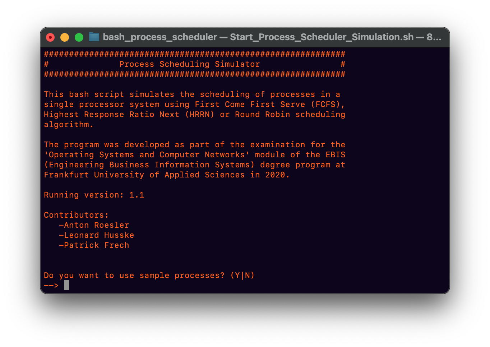
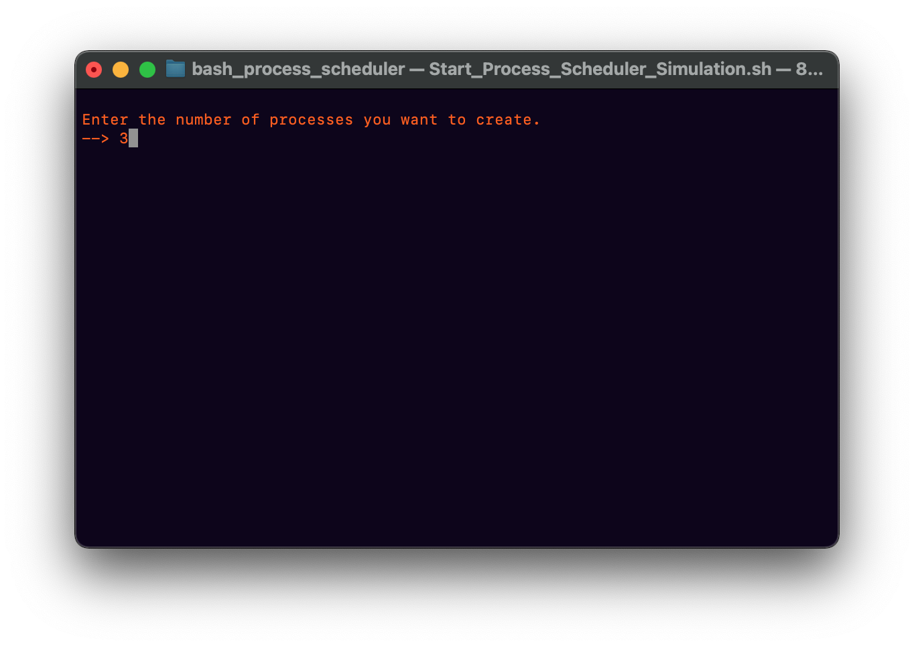
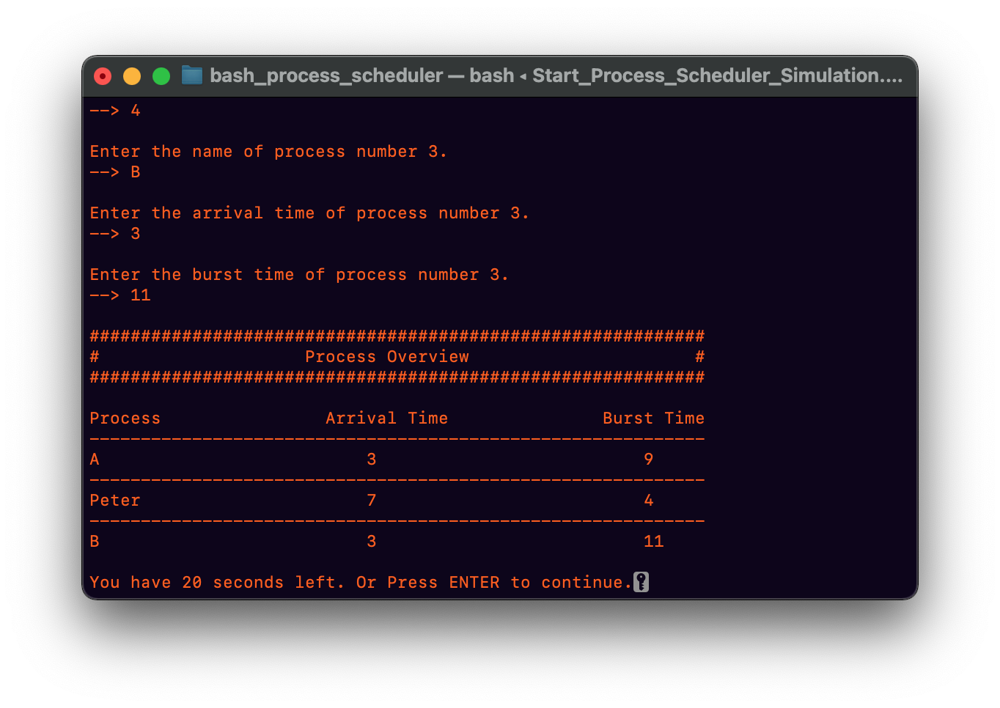
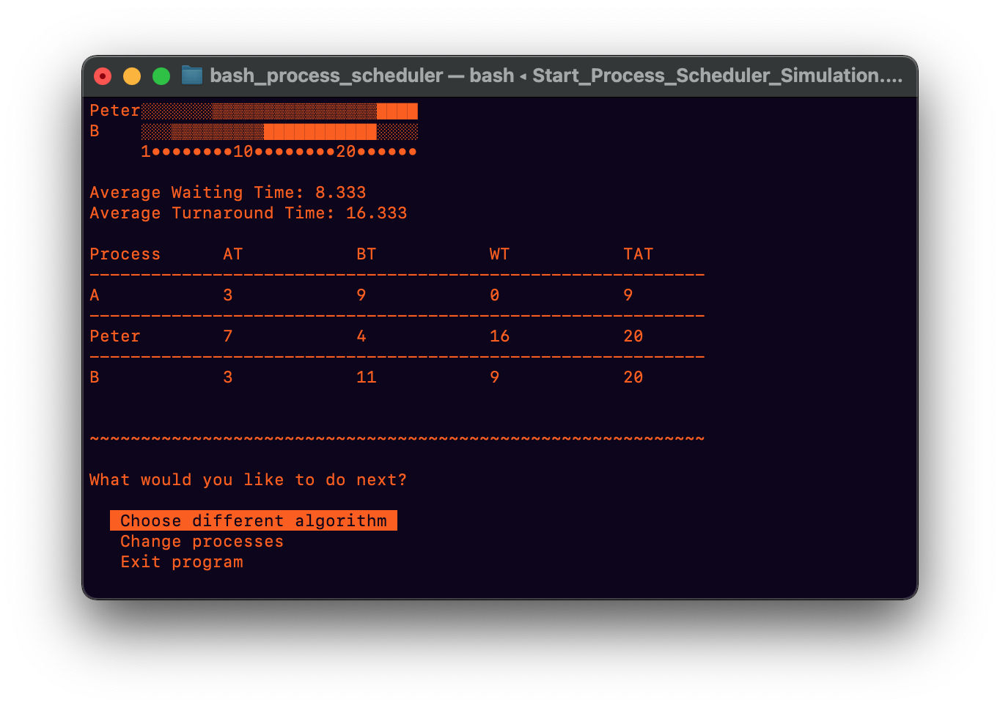
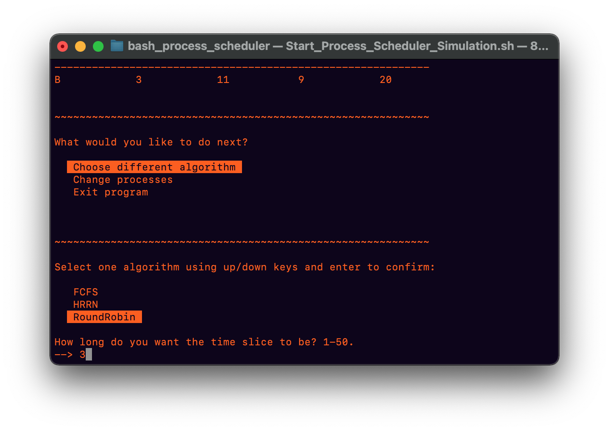
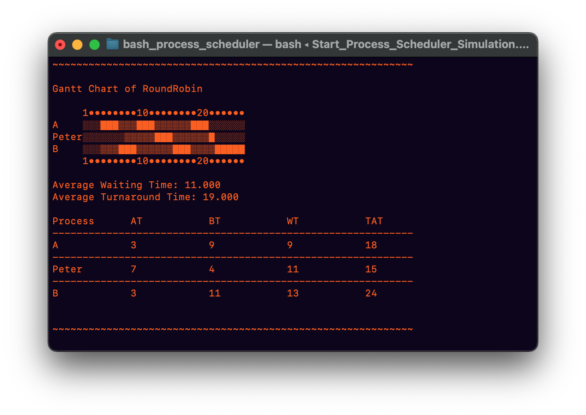

Visualization of Scheduling Algorithms in Bash Script.
This project was developed as a practical exam of the
module “Operating Systems and Computer Networks” of my
degree program. It was developed in work with my two
team partners over a period of several weeks during the
semester.
It is a command line level program that visualizes some
popular process scheduling algorithms (First Come First
Served, Round Robin, Highest Response Ratio Next). The
user can create any process he wants. A process is
composed of a name, an arrival time and a duration. The
given processes are then simulated with a scheduling
algorithm chosen by the user and the output is displayed
in a Gantt chart.
No library was used for the representation of the
processes, or the visualization as a Gantt chart. The
whole project was done by the team and uses only pure
Bash script.
My task during the project was to design and implement
the scheduling algorithms as well as the module which
outputs the result as a Gantt chart. This also included
the logic of the data structures that represent the
processes and results.
You can find the code for the project on my
Github.
Example:
After starting the script the user is asked if a set of sample processes should be used:
If the user chooses No, he can now specify how many processes he wants to create:
The user then enters the name, arrival time and burst time for each process and receives an overview:
Next, the user selects an algorithm using the arrow keys.

Now the Gantt chart is displayed. A block stands for time in which a process is executed and a light block for waiting time. In the table below the user gets additional information about waiting time and turn-around time:

The user can then simulate the same processes again with a different algorithm if desired:
When choosing the Round Robin scheduling algorithm, the user must specify a time slice:
And finally the result with Round Robin:
